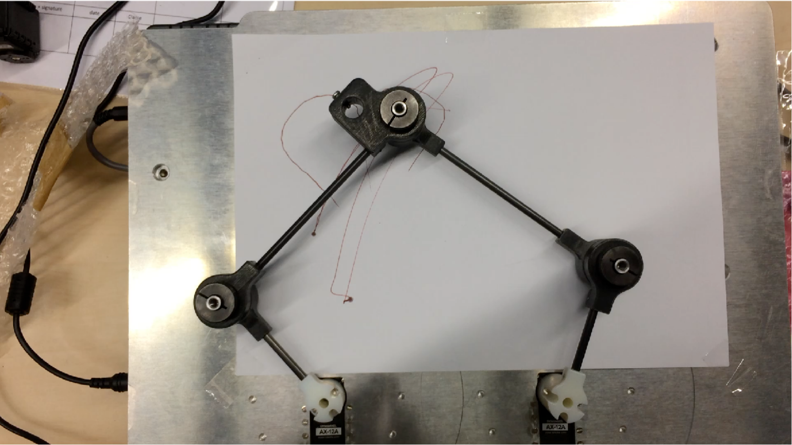

Informatique industrielle
Ce projet a été réalisé par Bonnet Gaëtan, Dalibard Mélanie et Luton Philémon dans le cadre du cours d’informatique industrielle de l’année 2025/2026 en MIQ5.
L’objectif de cette page internet est d’expliquer le fonctionnement de la plateforme robotique « pantographe » avec ROS2 sur une Raspberry Pi (PI5) et de documenter le projet.
Voici une image de la maquette :
{kind=link}

Le projet consiste à :
Décrire la plateforme mécanique
Décrire le matériel électronique, la carte Dynamixel avec des liens vers les documentations techniques (datasheets)
Créer la représentation mécanique du pantographe dans un fichier URDF
Visualiser le résultat avec RViz
Décrire la dynamique et donner les équations permettant de piloter la position de l’organe terminal du pantographe
Créer un package ROS2 pour contrôler le pantographe
Créer des tests et documenter ces tests
Créer un code pour dessiner avec le pantographe
Tester le pantographe en conditions réelles
Créer un code de simulation pour le pantographe
Tester la simulation avec Gazebo et RViz
Le rendu attendu est un site web correspondant à un fork du site internet de M. Yguel. Ce site décrira comment nous sommes parvenus à piloter le pantographe réel.